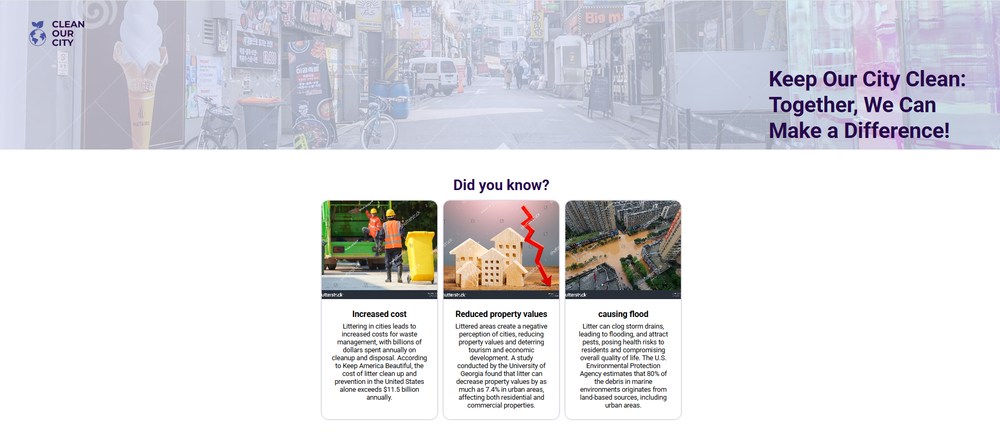
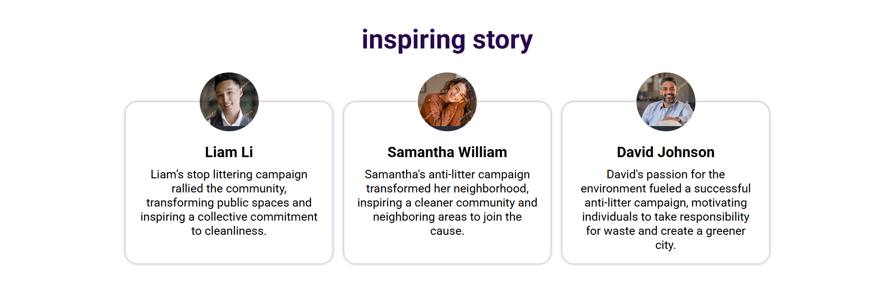
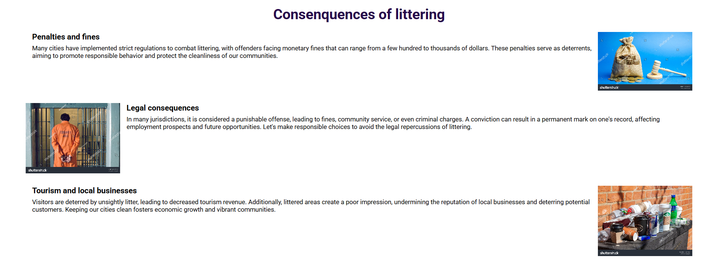
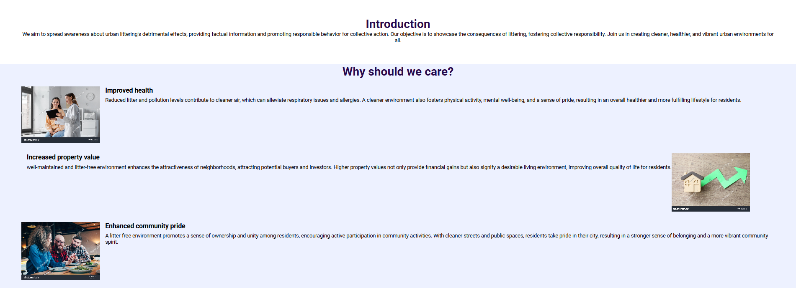

Clean Our City
A community-driven web app promoting a cleaner urban environment. Features include awareness campaigns, reporting tools, and event coordination.




A community-driven web app promoting a cleaner urban environment. Features include awareness campaigns, reporting tools, and event coordination.



